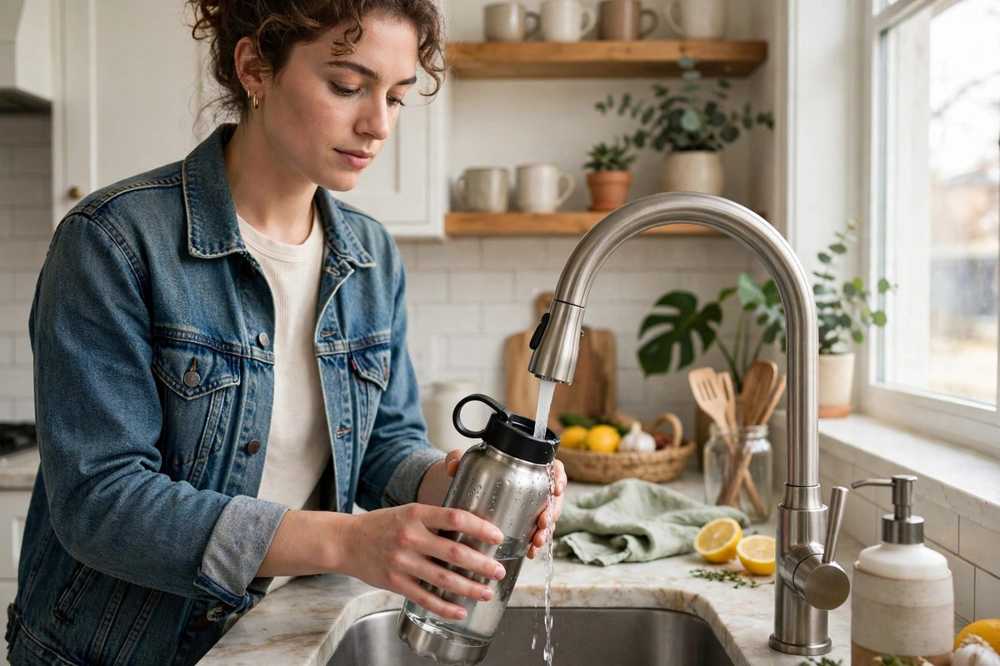
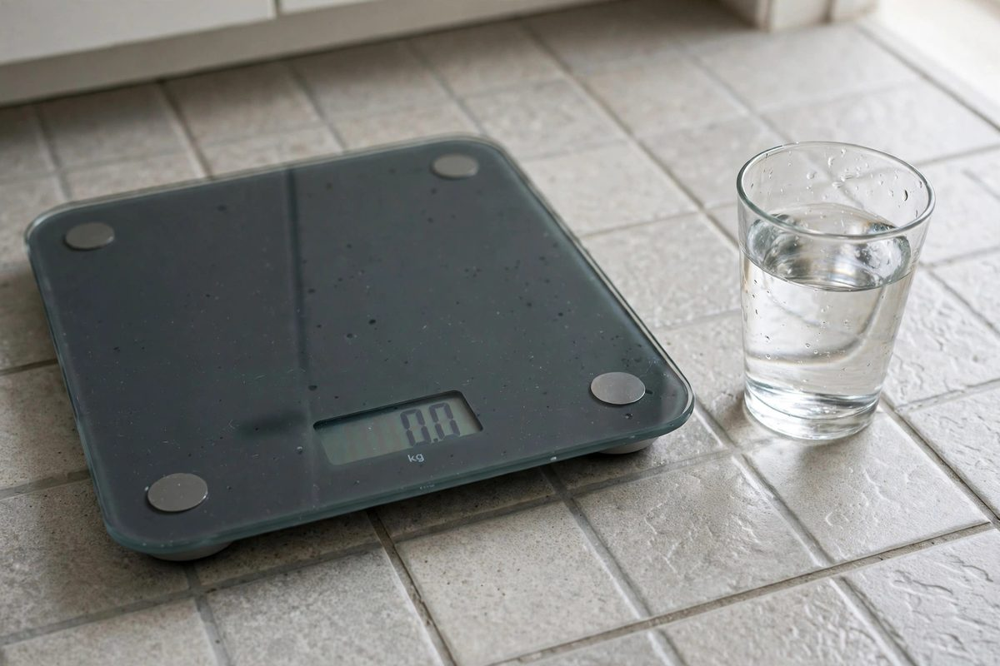
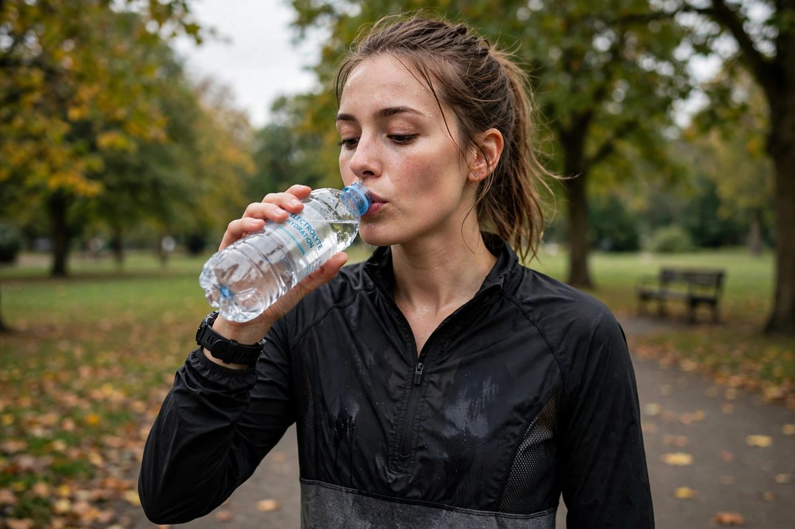
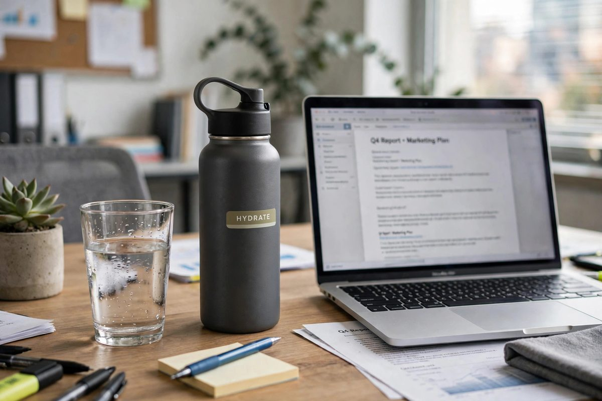
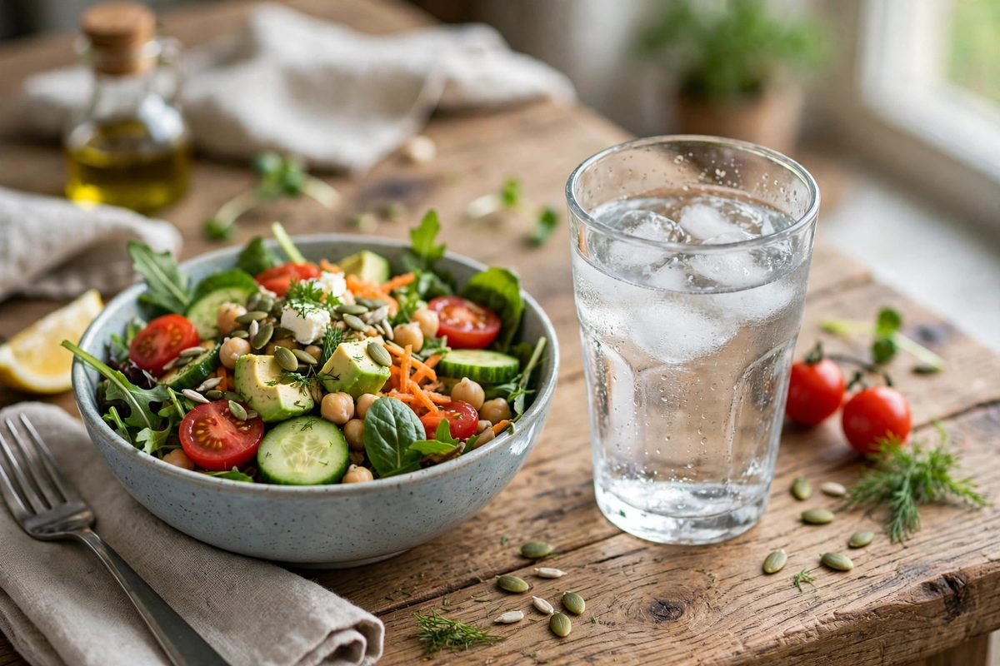
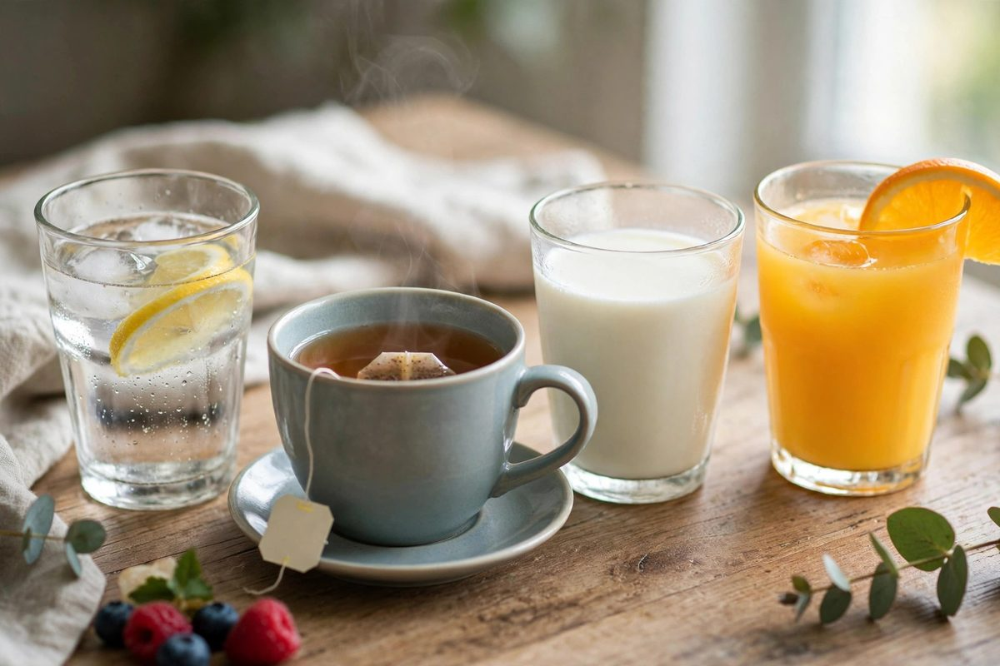
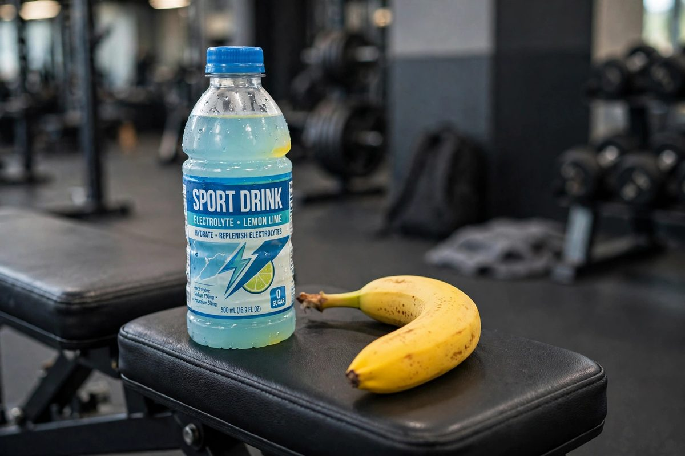
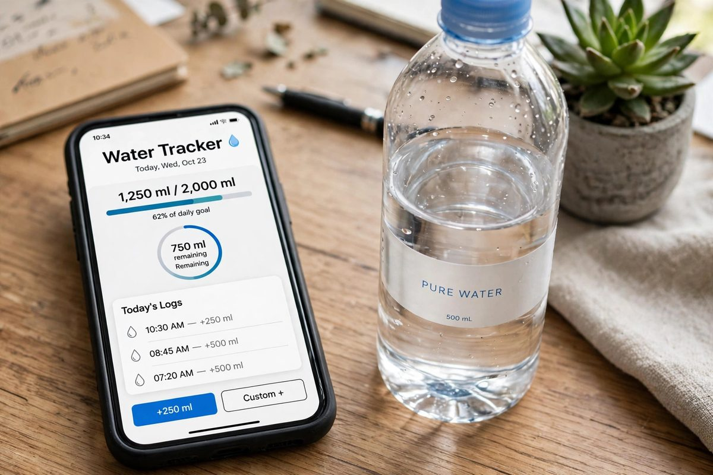
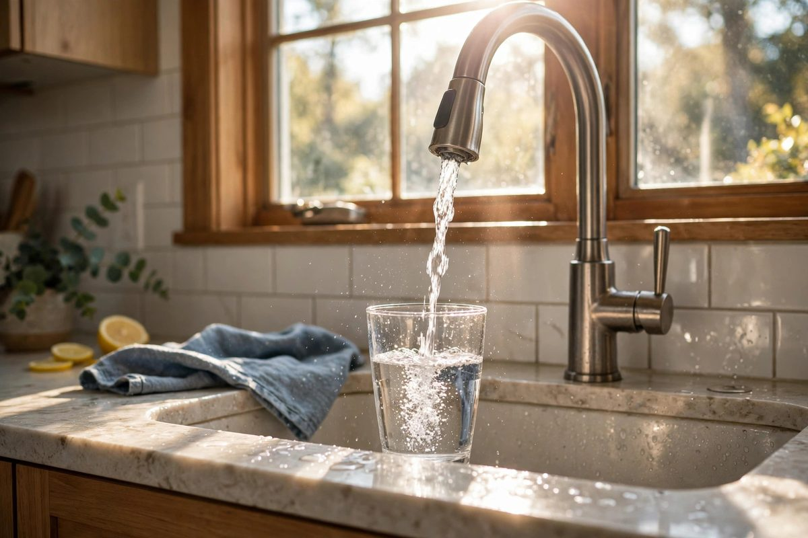

How It Works
Our water intake calculator starts from the common guideline of 35 ml per kilogram of body weight, then adds for activity and climate. Enter your weight in the main calculator and you will get a daily target in litres, glasses and bottles.
If you exercise, the activity calculator works out the extra water a session needs, before, during and after. The climate calculator adjusts your target for temperature and humidity, and the hydration schedule planner spreads the total across your waking day.
To understand the numbers, read how much water per day and water intake by body weight. For the warning signs, see signs of dehydration and can you drink too much water — and if you want the detail on exercise, water and exercise explains sweat losses and replacement.
All Calculators
Estimate your daily water needs from your weight, activity and climate.Water Intake by Activity Calculator
Work out how much extra water an exercise session needs, before, during and after.Hydration Schedule Planner
Spread your daily water target across your waking day with a simple hourly schedule.Water Intake by Climate Calculator
Adjust your daily water target for temperature, humidity and time outdoors in the heat.
Guides

How to Use a Water Intake Calculator
A step-by-step guide to getting a realistic daily water target from your weight, activity and climate.

How Much Water Should You Drink Per Day?
The guidelines behind daily water intake, why there is no single magic number, and how to find yours.

Water Intake by Body Weight
How the 30 to 35 ml per kilogram guideline works, with worked examples for different weights.

Water and Exercise: How Much Extra Do You Need?
How sweat losses change with exercise, how to replace them before, during and after training, and when salts matter.

Your Daily Hydration Schedule
How to spread your water intake across the day, from the first glass in the morning to the last one before bed.
Signs of Dehydration to Watch For
The early and later signs that you are not drinking enough, who is most at risk, and what to do about it.

Can You Drink Too Much Water?
Overhydration and hyponatraemia explained: how much is too much, who is at risk, and how to stay in the safe range.

Water Intake in a Hot Climate
How heat raises your water needs, how to adjust your target, and practical tips for staying hydrated in hot weather.

Water Intake in Winter
Why you still need enough water in cold weather, how winter changes your needs, and how to remember to drink when you are not thirsty.

Water Intake for Children
How much water children need at different ages, how to encourage drinking, and the signs of dehydration in children.

Water Intake for Older Adults
Why hydration gets harder with age, how much older adults need, and practical ways to drink enough every day.

Water and Weight Loss
How drinking water helps weight loss, how much to drink, and the habits that make it work.

Water vs Other Drinks: What Counts?
Which drinks hydrate you, which ones do not, and how tea, coffee, juice, milk and alcohol compare with water.

Electrolytes Explained
What electrolytes are, why sweat depletes them, when you need to replace them, and how food and drinks do it.

Water Intake for Runners
How runners should hydrate before, during and after a run, how to estimate sweat loss, and how to avoid over-drinking.

Tracking Your Daily Water Intake
Simple ways to track how much you drink, the tools that help, and how to use the record to build a habit.

Water Quality at Home
How tap water is treated, when a filter helps, and how to store water safely at home.

Morning Hydration Habits
Why the first glass of the day matters, and how to build a morning drinking habit that lasts.
Water Intake Myths Debunked
The most common wrong ideas about drinking water, from eight glasses to coffee, and what is actually true.
Water Intake in Pregnancy
How much water to drink during pregnancy, why needs rise, and how to stay hydrated safely.
Frequently Asked Questions
How much water should I drink a day?
A common guideline is 30 to 35 ml per kilogram of body weight, plus more for exercise and heat. For a 70 kg adult that is roughly 2.1 to 2.5 litres, including water from food.
Does food count towards water intake?
Yes. About a fifth of daily water usually comes from food, especially fruit, vegetables, soups and yoghurt.
Do tea and coffee count?
Yes, they count towards fluid intake. Alcohol does not, because it increases water loss.
How do I know if I drink enough?
Pale straw-coloured urine, regular toilet trips, and no persistent thirst or headache are good signs.
Can you drink too much water?
Yes, rarely. Very large volumes in a short time can dilute blood sodium. Spread intake through the day.
Is my data stored anywhere?
No. The calculation runs in your browser, and nothing you enter is sent or stored.